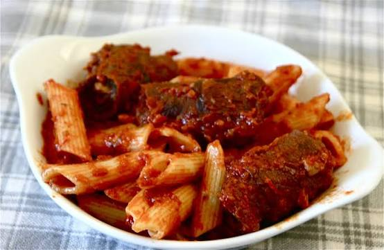

Macaronade
sétoise


⟹ Plats Emblématiques ⟸
La macaronade est l’un des plats les plus identitaires de Sète et l’un des meilleurs exemples de la rencontre entre le port languedocien et l’Italie méridionale. Après la Révolution française puis surtout au XIXe siècle, des familles italiennes, notamment originaires du golfe de Naples, s’installent dans la ville. Pêcheurs, marins et travailleurs du port apportent avec eux leurs habitudes alimentaires, parmi lesquelles la place centrale des pâtes et des longues sauces mijotées à la tomate.

Le nom même de « macaronade » évoque les macaronis tout en portant la marque linguistique du Midi : le suffixe -ade, très présent dans le français régional et l’occitan. Le plat appartient donc à un univers culturel double, italien par l’importance des pâtes et de la sauce tomate, sétois par son évolution, son vocabulaire et les usages familiaux qui l’ont façonné.
Dans les familles de pêcheurs, les produits de la mer dominaient naturellement les repas ordinaires. La macaronade à la viande a pris une place particulière dans le repas dominical et les grandes réunions familiales. Longue à cuire, copieuse et conçue pour de nombreux convives, elle correspond parfaitement à la cuisine des dimanches, des fêtes et des retrouvailles.
Son élément le plus caractéristique est la brageole, paupiette de viande garnie d’ail, de persil et généralement de poitrine de porc ou de lard. Elle mijote longuement dans la tomate. Selon les maisons, la macaronade reçoit aussi des coustillous ou travers de porc, des saucisses, des boulettes ou d’autres morceaux. Cette diversité n’est pas une déformation récente : l’Office de tourisme de Sète rappelle qu’il existe autant de recettes que de familles sétoises.
La sauce constitue le véritable cœur du plat. Les viandes y cuisent suffisamment longtemps pour enrichir la tomate de leurs sucs ; les pâtes, traditionnellement de gros macaronis mais pas exclusivement, sont ensuite servies avec cette sauce dense et les morceaux de viande. Le parmesan ou un fromage râpé complète souvent le service, autre trace visible de l’héritage italien.
La macaronade raconte également l’histoire sociale du Quartier-Haut et des communautés maritimes sétoises. Dans cette ville construite autour de son port, les recettes circulaient entre familles, quais, marchés et fêtes. La cuisine locale s’est formée par accumulation : traditions languedociennes et provençales, apports catalans, italiens, espagnols puis pieds-noirs ont composé ce que les institutions touristiques locales qualifient de « mosaïque latine ».
Au XXe siècle, la macaronade quitte progressivement la seule sphère domestique pour devenir un emblème public. Des passionnés et confréries culinaires ont cherché à en défendre les gestes et l’esprit, tandis que des concours de macaronade se sont installés dans le calendrier festif sétois. Cette volonté de codification n’a pourtant jamais effacé la réalité familiale du plat : chacun revendique volontiers la recette de sa mère ou de sa grand-mère.
Elle accompagne aujourd’hui les grands moments de sociabilité sétoise, notamment les périodes de fêtes et de joutes. Le plat est moins une formule figée qu’un patrimoine vivant : la fidélité tient autant à la cuisson lente, à la générosité de la sauce et au partage qu’à une liste immuable d’ingrédients.
De plat populaire issu des migrations méditerranéennes, la macaronade est ainsi devenue une véritable mémoire comestible de Sète. Elle témoigne de la capacité d’une ville portuaire à transformer des traditions venues d’ailleurs en un patrimoine local si profondément adopté qu’il est désormais inséparable de son identité.
Macaronade bâtarde : version rapide, préparée simplement avec des morceaux de bœuf, de porc ou de saucisse.
Macaronade aux fruits de mer : variante avec moules farcies, calamars et gambas, appréciée dans les guinguettes de l'étang de Thau.
Spaghettade : lorsque l'on remplace les macaronis par des spaghettis, on ne parle plus de macaronade mais de spaghettade.
La macaronade se déguste avant tout à Sète, notamment lors des grands rendez-vous festifs de la ville.
Sète et son quartier historique de la Pointe Courte, cœur de la tradition italo-sétoise depuis plus d'un siècle.
Tournois de joutes nautiques où la macaronade accompagne systématiquement les réjouissances populaires.
Fêtes de la Saint-Louis et de la Saint-Pierre grands rendez-vous estivaux sétois où le plat est roi.
Championnat du monde de la macaronade organisé chaque année autour du 20 août à Sète.